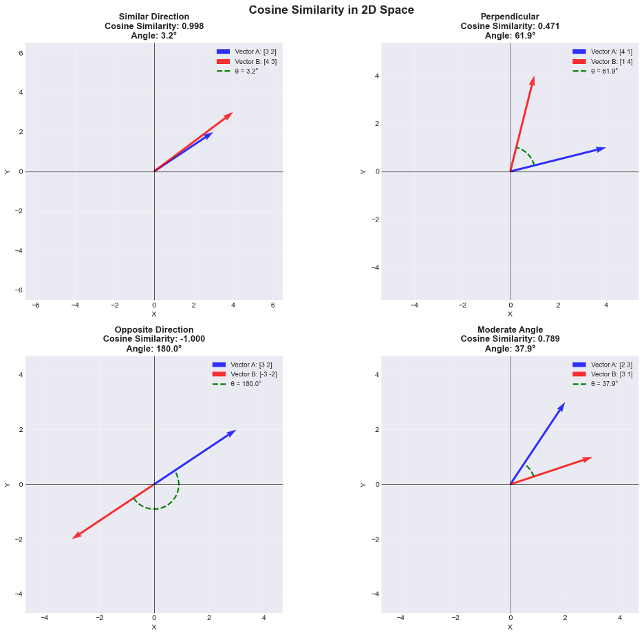
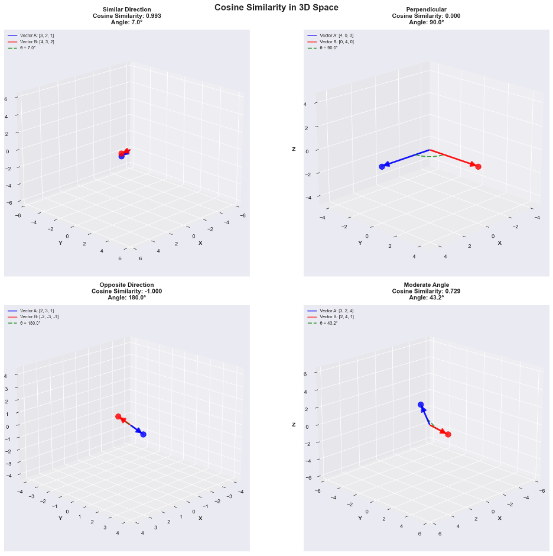

Hello and welcome to Team 9's Project – Visualizing Art!
Our Goal
The goal of our project is to represent artwork from the Metropolitan Museum of Art in a fun and dynamic way that will highlight hidden connections between art pieces.
The MET
According to Wikipedia: "The Metropolitan Museum of Art, colloquially referred to as the Met, is an encyclopedic art museum in New York City. By the floor area, it is the fourth-largest museum in the world and the largest art museum in the Americas. With 5.727,258 million visitors in 2024, it is the most-visited museum in the United States and the fourth-most visited art museum in the world." [from Wikipedia]
Although the Met has their own website which can be found here, we found the user interface to be limited and clunky. Artworks remain static and alone. We wanted to use what we had learned in CSE6242 to represent art in a unique way while highlighting hidden connections.
The MET Open Access Dataset
The data we used for our project came from the Metropolitan Museum of Art Open Access CSV, which can be found here. This dataset provides information and metadata on over 470,000 pieces of art. The images were downloaded separately using the Met Collection API. We downloaded as many images as we could and decided to work on a smaller subset of just under 9000 images. Our goal was to use the visual information from the images and the information from the image metadata to identify hidden connections between artworks.
Visual Analysis
First, we made use of the Contrastive Language-Image Pre-Training (CLIP) model made by Open AI. CLIP is a neural network model that can extract visual features from images of the art from the MET and encode those features as vector embeddings with up to 512 dimensions. Think of a vector embedding as a list of 512 values, each of which represents a different visual element such as style and composition. Given two vectors, one can use cosine similarity to determine how similar they are. Cosine similarity is a metric used to measure how similar two vectors are, regardless of their magnitude. It calculates the cosine of the angle between two vectors in a multi-dimensional space (in our case 512 dimensions). Below are some visual examples of how cosine similarity can be calculated for 2 and 3 dimensions. The cosine similarity equation will return values between -1 and 1 where -1 indicates vectors pointing in opposite directions, 0 means vectors are perpendicular to each other, and 1 indicates they point in the same direction (are perfectly similar).
 Metadata Analysis
To further our analysis of similarity, we wanted to implement the wealth of metadata in the MET dataset. Metadata can be thought of as categories such as "Artist Name", or "Artwork Medium". Since we were dealing with many categories, we decided to implement a system called one hot encoding. One-hot encoding is a process used to convert categorical variables into a numerical format that machine learning algorithms can understand. It creates a new binary column of ones and zeros for each unique category present in the dataset, where a '1' in a column indicates the presence of that category, and a '0' indicates its absence. Once we make this vector of 1's and 0's, we can use a cosine similarity in the same way we did for the visual embeddings to determine how similar art pieces are based on their metadata.
The Final Step
The final step is to combine the vectors from the visual CLIP embeddings and the one hot encoding embeddings to make one large vector for each piece of art. With this vector we can calculate the average cosine similarity score for each piece of art against all the other pieces of art. A high average score means: This piece of art is, on average, very similar to most of the other art in the collection.
Interactive Visualization
Finally, we represented these similarities using a network graph which you can find on this website. Each node represents a piece of art, and each line represents similar art pieces based on the average similarity scores we calculated.
We hope you find new and interesting connections on your art journey through the Met!
Dataset Statistics
If you are curious to learn more about the subset of data we used from the MET Open access dataset, you can view some statistics below:
- Total Number of Artworks: 8710 images
Artworks By Category
- Paintings: 4470
- Ceramics: 400
- Enamels: 400
- Fans: 400
- Gems: 400
- Glass: 400
- Idiophone: 400
- Ivory: 400
- Jewelry: 400
- Metalwork: 400
- Sculptures: 400
- Woodwork: 400
- Total Image Storage of Dataset: 14.0 Gb
- Total Metadata Storage of Dataset: 30.7 Mb
- Total Hours to download all images: 24 hours